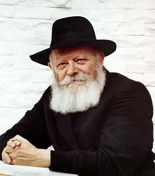

Rabino Menachem Mendel Schneerson · 1902–1994

O Lubavitcher Rebbe, Rabino Menachem Mendel Schneerson, foi o sétimo líder do movimento Chabad-Lubavitch e um dos maiores líderes espirituais do século XX. Nascido em Nikolaev, Ucrânia, em 18 de Nissan de 1902, era filho do Rav Levi Yitzchak Schneerson, renomado mestre da Torá.
Ainda jovem, o Rebe demonstrou um domínio extraordinário de toda a Torá — Talmud, Halachá, Cabalá e Chassidut. Estudou engenharia elétrica nas universidades de Berlim e Paris, não por necessidade, mas para poder conectar-se com o mundo moderno e trazer D'us para ele. Em 1951, após o falecimento do Rebbe anterior, Rabbi Yosef Yitzchak Schneerson, assumiu a liderança do Chabad-Lubavitch em Crown Heights, Brooklyn.
Sob sua liderança durante mais de quatro décadas, o Chabad cresceu de um pequeno movimento chassídico para uma presença mundial com emissários em mais de 100 países, incluindo o Brasil. O Rebe acreditava profundamente que cada Judeu — independentemente de seu nível de observância — possui uma chispa divina inextinguível. Ele enviava seus shluchim (emissários) para os lugares mais remotos do mundo, acendendo velas onde havia escuridão.
O Rebe faleceu em 3 de Tamuz de 5754 (1994), deixando um legado eterno. Seu túmulo, o Ohel em Queens, Nova York, recebe centenas de milhares de visitantes por ano. Pessoas de todo o mundo continuam escrevendo cartas ao Rebe — e relatam receber respostas em forma de bênçãos e milagres.
Junte-se a milhares de judeus ao redor do mundo que escrevem ao Rebe. Pelo site do Chabad.org você escreve diretamente pelo celular e sua carta vai ao Ohel — o túmulo sagrado do Rebe em Nova York.
Escreva ao Rebe no Chabad.org